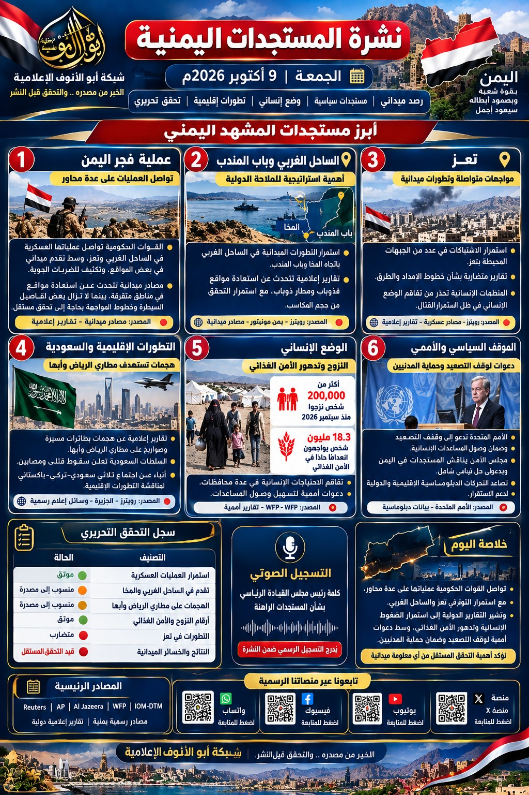

نشرة المستجدات اليمنية
شبكة أبو الأنوف الإعلامية — الخبر من مصدره.. والتحقق قبل النشر
النشرة المصورة


أبرز محاور العدد
التطورات الميدانية
تتضمن التغطية تقارير عن التطورات في الساحل الغربي وتعز. وتظل تفاصيل السيطرة والتحركات الميدانية منسوبة إلى مصادرها، وتحتاج إلى تحقق مستقل قبل اعتمادها كحقائق محسومة.
قيد التحقق المستقلالتطورات الإقليمية
تُعرض التقارير المتعلقة بالتصعيد الإقليمي مع إسناد كل تصريح إلى الجهة التي أعلنته، والتمييز بين ما أوردته وكالات الأنباء وما لم يتسنَّ تأكيده بصورة مستقلة.
راجع المصدر الأصليالوضع الإنساني
النزوح والأمن الغذائي واحتياجات الأسر المتضررة ملفات تستلزم متابعة بيانات المؤسسات الإنسانية الأصلية وتاريخ كل تقرير قبل نشر الأرقام.
تحقق من الأرقام وتاريخهاالموقف السياسي والدبلوماسي
تُدرج المواقف والبيانات الرسمية مع رابط المصدر وتاريخ النشر، مع عدم تقديم التصريحات المنسوبة باعتبارها تأكيدًا مستقلًا لمضمونها.
منسوب إلى مصدرهسجل التحقق التحريري
- موثق: تدعمه وثيقة أصلية أو مصادر مستقلة موثوقة.
- منسوب إلى مصدر: تصريح منشور مع تسمية الجهة التي أعلنته؛ ولا يعني ذلك تأكيد مضمونه مستقلًا.
- متضارب: روايات مختلفة لم يتسنَّ حسمها.
- قيد التحقق: لا يُعرض باعتباره حقيقة محسومة قبل توافر أدلة كافية.
تنبيه: يجب مطابقة كل رقم وادعاء في الصورة المصورة مع المصدر الأصلي قبل إعادة النشر؛ وجود اسم مؤسسة داخل التصميم لا يكفي وحده لإثبات صحة المعلومة.
المصادر الرئيسية
أضف رابط التقرير المحدد بجوار كل خبر عند اعتماده. الروابط التالية صفحات المؤسسات الرئيسية وليست بديلًا عن رابط التقرير الأصلي:
التسجيل الصوتي
سيظهر التسجيل هنا عند رفع ملف صوتي خاص بهذا العدد إلى المستودع.
أرشيف النشرات
روابط الأعداد السابقة. تُفتح الأعداد القديمة من رابط الإصدار الخاص بها، وتبقى هذه الصفحة مخصصة لعدد الجمعة 9 أكتوبر 2026.
تأكد من أن روابط الأعداد السابقة تشير فعلًا إلى نسخ محفوظة قبل اعتمادها نهائيًا.